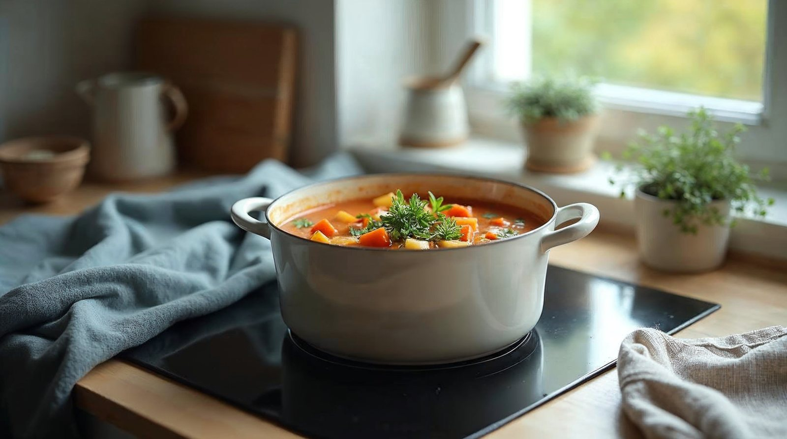
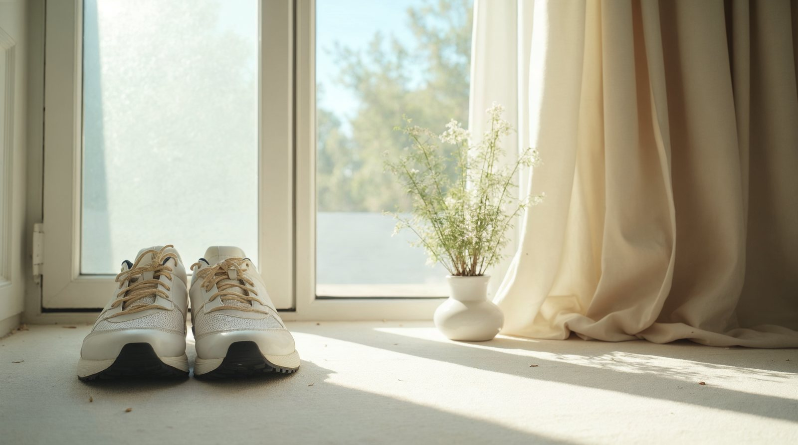
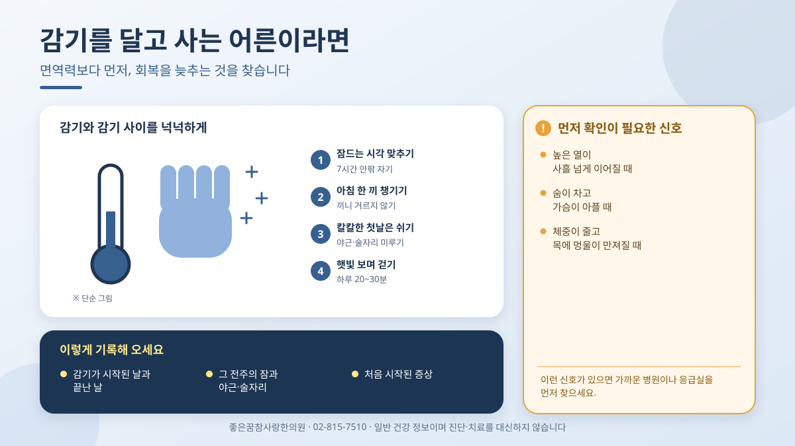

이종호 한의사 감수좋은꿈참사랑한의원 대표원장 (한의사 면허번호 19769)발행 2026-11-26 · 수정 2026-11-26
이 글의 차례
목이 칼칼해서 감기약을 먹고 겨우 나았다 싶었는데, 2주도 지나지 않아 또 코가 막히고 몸살 기운이 돕니다. 회사 사람들은 한 번 앓고 지나가는데 나만 계속 콜록거리고 있습니다. "저는 왜 이렇게 감기를 달고 살까요? 면역력이 떨어진 걸까요?" 진료실에서 정말 자주 듣는 질문입니다.
어른은 보통 1년에 두세 번 정도 감기를 앓는다고 알려져 있습니다. 그런데 계절마다 몇 번씩 걸리거나, 한 번 걸리면 몇 주씩 끌거나, 낫는 듯하다 다시 시작되는 일이 반복되면 몸이 지쳐 있다는 신호일 수 있습니다.
'면역력'이라는 말은 참 많이 쓰이지만, 실제로는 하나의 숫자로 잴 수 있는 것이 아닙니다. 잠, 식사, 피로, 스트레스, 환경, 그리고 이미 가지고 있는 질환이 함께 어우러진 결과에 가깝습니다. 그래서 진료실에서는 '면역력을 올리는 무언가'를 찾기보다, 무엇이 회복을 늦추고 있는지를 먼저 찾아봅니다.
감기를 자주 앓는다는 것은 몸이 약해서라기보다, 회복할 틈 없이 다음 일정으로 밀려가고 있다는 뜻인 경우가 많습니다. 몸이 쉴 자리를 되찾아 주는 것이 첫걸음입니다.
잦은 감기는 어떤 모습으로 나타나나요
감기를 달고 산다고 말씀하시는 분들의 모습은 몇 가지로 나뉩니다. 어떤 모양에 가까운지 알면 살피는 방향을 정하기 쉽습니다.
- 몇 주에 한 번씩 새로 걸리는 것처럼 목 아픔과 콧물이 반복되는 경우
- 한 번 걸리면 기침과 콧물이 3주 넘게 끄는 경우
- 열은 없는데 늘 으슬으슬하고 목이 칼칼한 상태가 이어지는 경우
- 바쁜 일이 끝나고 쉬려고 하면 꼭 몸살이 나는 경우
- 감기와 함께 입병이나 입술 물집이 자주 올라오는 경우
이 가운데 '늘 으슬으슬하고 칼칼한' 상태는 실제로 감기에 걸렸다기보다, 피로와 건조함, 코와 목의 예민함이 겹친 경우도 많습니다. 그래서 진료실에서는 정말 새로 걸린 것인지, 하나가 오래 이어지는 것인지부터 나눠 봅니다.
왜 어른인데도 감기를 자주 앓을까요
제가 가장 먼저 여쭙는 것은 잠입니다. 잠이 짧거나 얕은 날이 이어지면 몸이 회복하는 시간이 줄어듭니다. 잠이 부족한 주에 목이 먼저 칼칼해지는 경험은 많은 분이 해 보셨을 것입니다.
그다음은 식사입니다. 끼니를 거르거나 빵과 커피로 때우는 날이 많으면 몸이 회복에 쓸 재료가 부족해집니다. 다이어트로 식사량을 크게 줄인 시기에 감기가 잦아졌다는 분도 적지 않습니다.
쌓인 피로와 긴장도 빼놓을 수 없습니다. 야근, 육아, 간병처럼 쉴 틈 없이 이어지는 일정은 몸을 늘 긴장한 상태로 만듭니다. 이런 분은 일이 끝나고 긴장이 풀리는 순간 몸살이 나는 경우가 많습니다.
환경도 함께 봅니다. 어린이집이나 학교에 다니는 아이가 있는 집, 사람을 많이 만나는 직업, 건조한 사무실은 감기에 노출되는 횟수 자체를 늘립니다. 이런 경우에는 몸이 약하다기보다 만나는 바이러스가 많은 것입니다.
마지막으로 이미 가지고 있는 질환과 약입니다. 혈당이 잘 맞지 않거나, 빈혈이 있거나, 면역을 누르는 약을 쓰고 계신다면 감기가 잦고 오래갈 수 있습니다. 이런 경우에는 담당 선생님과의 상의가 먼저입니다.
감기가 잦은 것인지, 비염이나 다른 문제인지
재채기와 맑은 콧물, 코막힘이 몇 주씩 이어진다면 감기가 반복되는 것이 아니라 알레르기 비염일 수 있습니다. 비염은 열이나 몸살이 없고, 아침이나 특정 장소에서 심해지는 경향이 있습니다.
목이 붓고 열이 나는 일이 반복된다면 편도염을 먼저 생각해 봅니다. 기침이 감기 뒤에 몇 주씩 남는다면 감기 뒤 기침이나 후비루, 역류를 살펴봅니다. 각각 관리 방향이 다르니, 비슷해 보여도 나눠서 보는 것이 중요합니다.
이유 없이 피곤하고 체중이 줄면서 감기가 잦다면, 감기보다 몸 전체의 상태를 먼저 확인해 볼 필요가 있습니다.
면역력을 올린다는 제품을 먹으면 될까요
감기가 잦은 분들이 가장 먼저 찾으시는 것이 영양제나 건강기능식품입니다. 부족한 것을 채우는 데 도움이 될 수는 있지만, 잠이 짧고 끼니를 거르는 생활이 그대로라면 기대만큼 달라지지 않는 경우가 많습니다.
여러 제품을 한꺼번에 드시는 분도 계십니다. 같은 성분이 겹치거나 드시는 약과 부딪히는 경우가 있으니, 드시는 것을 모두 적어 약사나 의사에게 한 번 보여 주시길 권합니다. 한의원에 오실 때도 함께 가져와 주시면 진료 방향을 정하는 데 참고가 됩니다.
먹는 것을 하나 더하기보다, 회복을 방해하는 것 하나를 빼는 쪽이 오래가는 경우가 많습니다. 늦은 야식, 짧은 잠, 잦은 술 가운데 하나부터 줄여 보세요. 몸이 회복에 쓸 틈이 그만큼 생깁니다.
병원에서는 어떤 확인을 받아 보면 좋을까요
감기가 유난히 잦고 오래간다면 내과나 가정의학과에서 기본 혈액 검사를 받아 보시길 권합니다. 빈혈, 혈당, 갑상선 기능처럼 회복에 영향을 주는 항목을 확인할 수 있습니다. 기침이 오래 남는다면 흉부 사진을 함께 찍어 보기도 합니다.
검사에서 큰 이상이 없다는 말을 들으면 오히려 막막해하시는 분이 많습니다. 그럴 때는 잠과 식사, 피로처럼 검사로 드러나지 않는 생활의 흐름을 함께 들여다볼 차례입니다. 결과지는 한의원에 오실 때 가져와 주세요.
한의학에서는 잦은 감기를 어떻게 보나요
한의학에서는 몸 겉을 지키는 기운을 위기(衛氣)라고 부르고, 이 기운이 약하면 바깥의 찬 기운과 바람에 쉽게 상한다고 보았습니다. 땀이 쉽게 나고 바람을 싫어하며 감기에 잘 걸리는 분을 이런 경우로 살피곤 합니다.
또 소화 기능이 약해 몸이 쓸 기운을 잘 만들지 못하는 경우, 잠이 부족해 몸의 진액이 마른 경우, 긴장이 오래 쌓여 몸이 지친 경우처럼 같은 '잦은 감기'라도 바탕이 다릅니다. 그래서 진맥과 문진으로 그 바탕을 먼저 나누어 봅니다.
계절이 바뀔 때 감기가 잦아지는 이유
환절기에는 아침저녁의 기온 차가 커서 몸이 온도에 맞추느라 바빠집니다. 아침에 얇게 입고 나갔다가 저녁 찬 바람을 맞거나, 따뜻한 실내와 찬 바깥을 오가는 일이 잦으면 코와 목 점막이 쉽게 마르고 예민해집니다.
겨울에는 창문을 닫고 지내는 시간이 길어져 실내 공기가 건조하고 탁해집니다. 사람이 많이 모이는 좁은 공간에 오래 머무는 일도 늘어납니다. 연말 모임이 이어지며 잠이 짧아지고 술자리가 늘어나는 것도 겨울 감기가 잦은 이유 가운데 하나입니다.
여름에도 감기는 찾아옵니다. 냉방이 강한 사무실에서 하루를 보내고 찬 음료를 자주 드시면 몸이 안팎으로 식어 목이 칼칼해지기 쉽습니다. 사무실에 얇은 겉옷을 하나 두고 다니시는 것만으로도 도움이 될 수 있습니다.
잦은 감기에 대해 자주 헷갈리는 것
첫째, 감기는 약을 먹어야 빨리 끝난다는 생각입니다. 감기약은 증상을 덜어 주는 역할이 크고, 회복은 결국 몸이 쉬면서 이루어집니다. 약을 드시면서도 일정을 그대로 이어 가면 감기가 길어지는 경우가 많습니다.
둘째, 땀을 쭉 빼면 감기가 떨어진다는 생각입니다. 이미 지친 몸에서 땀을 많이 내면 오히려 기운이 더 빠지고 몸이 식을 수 있습니다. 따뜻하게 지내되 땀을 억지로 내지 않는 편이 좋습니다.
셋째, 항생제를 먹으면 감기가 빨리 끝난다는 생각입니다. 대부분의 감기는 바이러스로 생겨서 항생제가 필요하지 않은 경우가 많습니다. 항생제가 필요한지는 진찰한 의사가 판단하니, 남은 약을 임의로 드시지 않는 것이 좋습니다.
먼저 이렇게 여쭙니다
처음 오시면 대략 이런 순서로 여쭙니다. 미리 생각해 오시면 이야기가 수월해집니다.
- 최근 6개월 동안 감기를 몇 번 앓으셨나요? 한 번에 얼마나 갔나요?
- 주로 목, 코, 기침, 몸살 가운데 무엇으로 시작하나요?
- 잠은 몇 시에 들고 몇 시에 깨시나요?
- 끼니를 거르거나 대충 때우는 날이 일주일에 며칠인가요?
- 땀이 쉽게 나거나 바람을 유난히 싫어하시나요?
- 치료 중인 질환이나 드시는 약, 영양제가 있나요?
집에 어린 자녀가 있는지, 사람을 많이 만나는 일을 하시는지도 여쭙니다. 감기를 만나는 횟수 자체가 많은 분인지, 같은 환경에서도 유독 오래가는 분인지에 따라 살피는 방향이 달라지기 때문입니다.

일상에서 먼저 해 볼 수 있는 것
감기를 줄이는 생활은 거창하지 않습니다. 회복할 틈을 만들어 주는 작은 습관에서 시작합니다.
- 잠드는 시각을 일정하게 맞추고, 7시간 안팎 자기
- 아침을 가볍게라도 먹고, 끼니를 거르지 않기
- 외출 뒤와 식사 전에 손 씻기
- 실내 습도를 40~60% 정도로 맞추기
- 목이 칼칼한 첫날에는 일정을 줄이고 일찍 쉬기
- 하루 20~30분 햇빛을 보며 걷기
감기 기운이 느껴지는 첫날이 중요합니다. 이날 무리해서 야근하거나 술자리에 가면 감기가 길어지는 경우가 많습니다. 따뜻한 물을 자주 마시고 목과 어깨를 따뜻하게 감싸고 일찍 잠자리에 들어 보세요.
운동은 숨이 약간 찰 정도의 걷기부터 시작하시길 권합니다. 너무 강한 운동을 몰아서 하면 오히려 몸이 지쳐 감기에 걸리기 쉬워지는 분도 있습니다. 꾸준히, 가볍게가 기본입니다.
한의원에서 함께 살필 수 있는 경우
- 감기가 잦고 한 번 걸리면 오래 끄는 경우
- 땀이 쉽게 나고 찬 바람에 금세 으슬으슬한 경우
- 소화가 약하고 입맛이 없으며 늘 기운이 없는 경우
- 바쁜 일정이 끝나면 몸살이 반복되는 경우
- 감기 뒤 기침이나 피로가 오래 남는 경우
좋은꿈참사랑한의원에서는 모든 분의 맥을 먼저 짚고, 잠, 식사, 땀, 소화, 피로를 함께 여쭤, 회복을 늦추는 요인이 무엇인지 정리합니다.
진찰 뒤 지금 상태에 맞춰 침 치료, 생활 관리 안내, 한약 상담 가운데 필요한 것을 고릅니다. 한약은 드시는 약을 모두 확인한 뒤 신중하게 정하고, 임신 중이시라면 먼저 알려 주시고 산부인과와 상의하도록 안내합니다. 치료 중인 질환의 약은 처방한 선생님과 상의 없이 멈추지 않으셔야 합니다.
한의원 진료는 내과 진료를 대신하는 것이 아니라 나란히 가는 것입니다. 감기에 걸렸을 때 필요한 진료는 병원에서 받으시고, 한의원에서는 감기와 감기 사이에 몸이 회복할 자리를 만드는 일을 함께 살핀다고 생각해 주시면 됩니다.
이렇게 기록해 오시면 상담이 쉬워집니다
두세 달만 간단히 적어 보셔도 감기가 찾아오는 흐름이 보입니다.
- 감기 기운이 시작된 날과 끝난 날
- 처음 시작된 증상(목, 코, 기침, 몸살)
- 그 전주의 잠 시간과 야근, 술자리
- 끼니를 거른 날 표시
- 드신 감기약과 병원 진료 여부
적을 것이 많아 보여도 한 줄이면 충분합니다. 달력 한 칸에 증상과 잠 시간만 적어 두셔도 흐름이 보입니다.
기록을 보면 바쁜 주 뒤에 오는지, 아이가 아픈 뒤에 오는지, 계절이 바뀔 때 오는지가 드러납니다. 그것이 다음 감기를 줄이는 실마리가 됩니다.

감기와 감기 사이를 넉넉하게
감기가 잦다는 것은 몸이 쉬어 달라고 보내는 신호이기도 합니다. 일정을 다 줄이기는 어렵더라도, 잠 시각 하나, 아침 한 끼 하나처럼 지킬 수 있는 것부터 정해 보세요.
감기를 앓는 동안 스스로를 탓하시는 분도 계십니다. 관리를 못 해서, 몸이 약해서 그렇다고요. 하지만 바쁜 시기를 버텨 낸 몸이 잠시 쉬어 가는 것이라고 생각해 주셨으면 합니다. 쉬는 것도 회복의 일부입니다.
회복한 뒤에는 바로 예전 일정으로 돌아가기보다, 사나흘 정도는 잠을 조금 더 챙기고 술자리와 야근을 미뤄 두시길 권합니다. 이 며칠이 다음 감기까지의 간격을 넓히는 데 도움이 될 수 있습니다.
이번 주에는 잠드는 시각을 정해 일주일만 지켜 보시길 권합니다. 다음에 오시면 그 기록과 함께 감기의 흐름을 펼쳐 보겠습니다.
이런 증상은 먼저 확인이 필요합니다
- 39도 가까운 높은 열이 사흘 넘게 이어지거나, 숨이 차거나 가슴이 아픈 경우
- 이유 없이 체중이 줄거나, 밤마다 식은땀이 나거나, 목·겨드랑이에 멍울이 만져지는 경우
이런 신호가 있으면 한의원보다 가까운 병원이나 응급실을 먼저 찾으세요.
함께 읽으면 좋은 글
- 감기나 독감은 지나갔는데 기운이 돌아오지 않고 몸이 처질 때는 어떻게 살피나요?
- 충분히 쉬어도 몸이 늘 피곤한 만성피로는 어떤 점을 살펴보나요?
- 편도염이 자꾸 반복될 때, 목이 붓고 열이 나는 일을 줄이려면 무엇을 살피나요?
- 한약을 먹는 중에 감기에 걸리면 계속 먹어도 되나요?
- 혼자 사는 수험생이 감기에 걸렸을 때 공부와 쉬기는 어떻게 정하나요?

여쭙는 것
- 최근 6개월 동안 감기를 몇 번 앓으셨나요? 한 번에 얼마나 갔나요?
- 주로 목, 코, 기침, 몸살 가운데 무엇으로 시작하나요?
- 잠은 몇 시에 들고 몇 시에 깨시나요?
생활에서 해 볼 것
- 잠드는 시각을 일정하게 맞추고, 7시간 안팎 자기
- 아침을 가볍게라도 먹고, 끼니를 거르지 않기
- 외출 뒤와 식사 전에 손 씻기
한의원에서 함께 살필 것
- 감기가 잦고 한 번 걸리면 오래 끄는 경우
- 땀이 쉽게 나고 찬 바람에 금세 으슬으슬한 경우
- 소화가 약하고 입맛이 없으며 늘 기운이 없는 경우
먼저 확인이 필요한 신호
- 39도 가까운 높은 열이 사흘 넘게 이어지거나, 숨이 차거나 가슴이 아픈 경우
- 이유 없이 체중이 줄거나, 밤마다 식은땀이 나거나, 목·겨드랑이에 멍울이 만져지는 경우
한눈에 보는 표
| 구분 | 핵심 |
|---|---|
| 여쭙는 것 | 최근 6개월 동안 감기를 몇 번 앓으셨나요? 한 번에 얼마나 갔나요? 주로 목, 코, 기침, 몸살 가운데 무엇으로 시작하나요? |
| 생활에서 해 볼 것 | 잠드는 시각을 일정하게 맞추고, 7시간 안팎 자기 아침을 가볍게라도 먹고, 끼니를 거르지 않기 |
| 한의원에서 함께 살필 것 | 감기가 잦고 한 번 걸리면 오래 끄는 경우 땀이 쉽게 나고 찬 바람에 금세 으슬으슬한 경우 |
| 먼저 확인이 필요한 신호 | 39도 가까운 높은 열이 사흘 넘게 이어지거나, 숨이 차거나 가슴이 아픈 경우 이유 없이 체중이 줄거나, 밤마다 식은땀이 나거나, 목·겨드랑이에 멍울이 만져지는 경우 |
자주 묻는 질문
감기가 잦으면 면역력 검사를 받아야 하나요?
면역력을 하나의 숫자로 재는 검사는 없습니다. 다만 감기가 유난히 잦고 오래가며 피로와 체중 감소가 함께 있다면 내과에서 혈액 검사 같은 기본 검사를 받아 보시길 권합니다.
감기에 걸렸을 때 한의원에 와도 되나요?
열이 높거나 증상이 심할 때는 병원 진료가 먼저입니다. 다른 분들을 위해 기침이나 열이 있으시면 방문 전에 전화로 먼저 상의해 주세요.
영양제를 여러 개 먹고 있는데 한약과 같이 먹어도 되나요?
드시는 영양제와 약을 모두 알려 주시면 확인한 뒤 신중하게 정합니다. 겹치는 성분이 있는지 함께 살펴보는 것이 좋습니다.
운동을 열심히 하면 감기가 줄어드나요?
가볍고 꾸준한 움직임은 도움이 될 수 있지만, 지친 상태에서 강한 운동을 몰아서 하면 오히려 몸이 더 힘들어질 수 있습니다. 걷기처럼 가벼운 것부터 시작해 보세요.
좋은꿈참사랑한의원은 재진 때 지난번 이야기부터 이어서 여쭙니다. 진료시간과 예약은 오시는 길에서 확인하세요.
어디서 상담받을 수 있나요?
좋은꿈참사랑한의원은 서울 동작구 만양로2길 2 신성빌딩 3층·5층(서울 동작구 상도동, 7호선 상도역 3번 출구 근처)에 있습니다. 한의사 3명(이종호 대표원장, 조영기 수석진료원장, 정원영 진료원장)이 진료합니다. 진료시간은 평일 09:30~20:00(점심 13:00~14:00), 토·일·공휴일 09:30~15:00이며, 방문 전 전화로 확인을 권합니다. 예약은 네이버 예약, 카카오톡 상담, 전화 02-815-7510로 받습니다.
이 글은 일반적인 건강 정보이며 개인의 진단이나 치료를 대신하지 않습니다. 증상이 있거나 복용 중인 약이 있다면 진료를 통해 확인하세요. 치료 효과는 개인마다 다를 수 있습니다.
작성 기준: 일반적으로 알려져 있는 건강 정보를 참고해 정리했습니다(대표원장 감수). 증상 기록은 1~2주 동안 하루 1회, 비슷한 시간에 적어 오시면 지난 상태와 비교하기 쉽습니다.